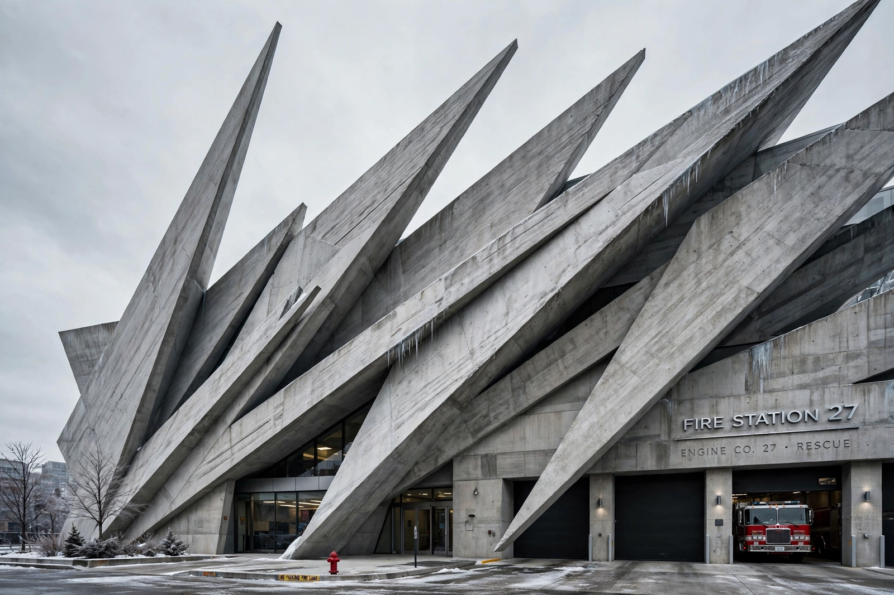

From Wikipedia, the free encyclopedia
| Vitra Fire Station | |
 | |
| Location | Vitra Campus, Weil am Rhein, Germany |
|---|---|
| Architect | Zaha Hadid |
| Completed | 1993 |
| Client | Vitra |
| Style | Deconstructivism |
The Vitra Fire Station is a building on the Vitra Campus in Weil am Rhein, Germany, designed by the Iraqi-British architect Zaha Hadid and completed in 1993. It was Hadid's first completed building and launched her career as a practising architect.
In 1981 a major fire swept through the furniture manufacturer Vitra's factory complex, destroying much of the plant. In response, Vitra's chairman Rolf Fehlbaum began commissioning an extraordinary campus of buildings by leading architects — including Frank Gehry, Tadao Ando and Álvaro Siza — and instituted a private fire brigade, for which Hadid designed the station. Hadid, then known for radical competition-winning paintings and drawings widely considered unbuildable, was chosen to translate her explosive diagonal style into built form.
The building is composed of sharp, intersecting planes of cast in-situ concrete, like frozen shards or blades, with almost no right angles. Inside, linear spaces slide past one another: garages for fire engines, showers and changing rooms for firefighters, and a kitchenette. Slanted walls, concealed doors and absence of colour make the interior deliberately disorienting — a "frozen explosion" expressing the tension and readiness of alarm.
Once the municipalities of Weil am Rhein and Basel arranged public fire cover, Vitra disbanded its private brigade, and the building was repurposed as an exhibition and event space for the Vitra Design Museum, where it hosts displays of chairs from the museum's collection. It remains one of the most visited works of deconstructivist architecture and a fixture of architectural pilgrimage.